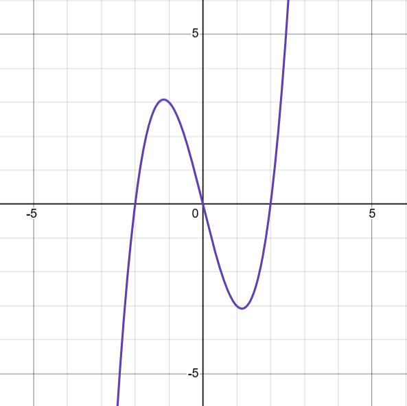

Conceitualização
Uma função polinomial é aquela composta de variáveis e coeficientes, com uma quantia finita de termos.
Envolve apenas operações de adição, subtração, multiplicação e exponenciação(apenas números positivos).
Funções quadráticas e lineares também são polinomiais, porém, neste artigo, vamos focar nas funções de grau superior a 2.
Um exemplo seria uma função de 3° grau:
f(x) = x3-4x

Note que o grau da função é dado pelo maior expoente de uma variável da função.
Resolvendo
Para resolver uma equação de grau maior que dois, podemos ou chutar raizes ou fatorar.
Apesar de existirem soluções gerais para as de 3° e 4° grau, elas são muito complicadas
Como fatorar é situacional, vamos focar no método do Teorema do Resto:
Teorema do Resto
Basicamente, P(x) é usado para representar uma expressão polinomial em termos de x.
Dividindo P(x) por diferentes termos, obtemos Q(x), o quociente.
Substituindo um valor de x, tipo x = a, em P(x), obtemos P(a)
Portanto, P(x) é o nosso dividendo, x-a(valor de x) o divisor, Q(x) o quociente e P(a) o nosso resto.
Exemplo: x3+3x2-4 = 0
P(x) = x3+3x2-4 e P(1) = 13+3.12-4 = 1+3-4 = 0
Portanto, x=1 é uma solução da equação x3+3x2-4.
x3+3x2-4⁄x-1 = x2+4x+4
Sabemos que x2+4x+4 é o resultado do produto notável (x+2)², o que significa que x = -2.
Portanto, os resultados da equação x3+3x2-4 = 0 são: x = 1, -2

Intersecção de duas funções
A intersecção de duas funções se dá por sua igualdade. Seja f(x) e g(x), a intersecção entre eles será f(x)=g(x)
Exemplo: Seja f(x) = x3+x2-2x e g(x) = -x3+x2+2x
x3+x2-2x = -x3+x2+2x
x3+x3+x2-x2-2x-2x = 0
2x3-4x = 0
Fatorando: x(x2-2) → x = 0, ±√2
Portanto, as duas funções se interseptam em x = 0, ±√2
Encontrando os pontos:
f(0) = 03+02-2.0 = 0+0-0 = 0
f(√2) = (√2)3+(√2)2-2.√2 = 2√2+2-2√2 = 2
f(-√2) = (-√2)3+(-√2)2-2.√2 = -2√2+2-2√2=2
Portanto, os pontos de intersecção de f(x) e g(x) são: (0,0), (√2,2) e (-√2, 2)

Vértice de uma Função
Para encontrarmos o vértice uma função de grau superior a 2, precisamos aprender derivação:
Derivação
Seja f(x) = xn, f '(x) = nxn-1
Exemplo: f(x) = x³+x²+x+1, portanto f '(x) = 3x²+2x+1
Entendo a derivação, seguimos para o vértice:
Vértice
Os vértices de uma função são as soluções da sua derivação.
Exemplo: Seja f(x) = x4-3x3+3x2-x
f '(x) = 4x3-9x2+6x-1
P(1) = 4.13-9.12+6.1-1 = 4-9+6-1 = 0, portanto x = 1 é uma raiz da equação.
4x3-9x2+6x-1⁄x-1 = 4x2-5x+1
Aplicando Bhaskara:
Portanto, o x dos vértices são 1⁄4 e 1
Encontrando os pontos
f(1) = 14-3.13+3.12-1 = 1-3+3-1 = 0
f(1⁄4) = (1⁄4)4-3.(1⁄4)3+3.(1⁄4)2-1⁄4 = 1⁄256-3⁄64+3⁄16-1⁄4 = 1⁄256-12⁄256+48⁄256-64⁄256 = -27⁄256
Portanto, os vértice de f(x) são: (1⁄4, -27⁄256) e (1, 0)

Esboço
Para esboçarmos nosso gráfico, ligamos os zeros e os vértices.
Seja f(x) = x4-4x3+x2+6x
Resolvendo f(x) = 0:
x4-4x3+x2+6x = 0
x(x3-4x2+x+6) = 0
P(x) = x3-4x2+x+6, P(2) = 8-16+2+6 = 0
x3-4x2+x+6⁄x-2 = x2-2x-3
P(x) = x2-2x-3, P(3) = 9-6-3 = 0
x2-2x-3⁄x-3 = x+1
f(x) = x4-4x3+x2+6x = x(x-2)(x-3)(x+1) = 0
Portanto, as raízes são: x = -1, 0, 2, 3
Encontrando os vértices:
f '(x) = 4x3-12x2+2x+6
P(x) = 4x3-12x2+2x+6, P(1) = 4-12+2+6 = 0
4x3-12x2+2x+6⁄x-1 = 4x2-8x-6
4x2-8x-6 = 2(2x2-4x-3)
Encontrando os pontos:
f(1) = 1-4+1+6 = 4
f() = - 9⁄4
f() = - 9⁄4
Portanto, temos os seguintes pontos:
(-1, 0), (, - 9⁄4), (0, 0), (1, 4), (2, 0), (, - 9⁄4), (3, 0)
Conectando-os, temos: